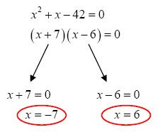
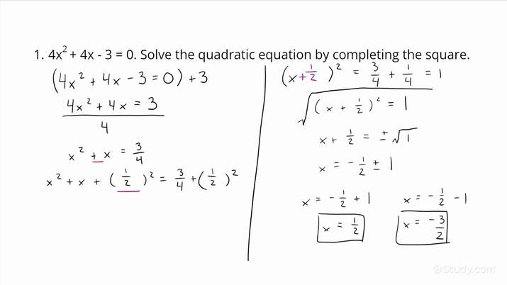
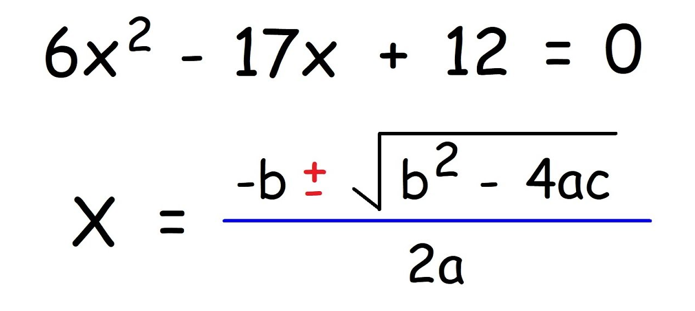
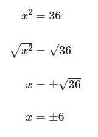
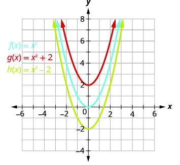

Solving by factoring, by completeing a square, by the quadratic formula, by taking square roots, and transformations of graphs.
Factoring is done by taking the two greatest numbers that could be multiplied together to create the constant interger of the formula.
Completing the square of a quadratic involves simplifying and inserting the results into the formula +(b/2)^2 in order to solve.
Solving quadratics using the quadratic formula is very simple: put the equation into this form: ax^2+bx+c=0, then plug the results into (-b±√(b^2-4ac))/(2a)
Taking square roots is as simple as finding the square roots of both the value of x^2 and the coeffecient that goes with it.
Transforming graphs involves taking a parabola of the same scale as the formula presented, and adjusting X or Y coordinates until the graphed parabola lines up with the one made by the function. 